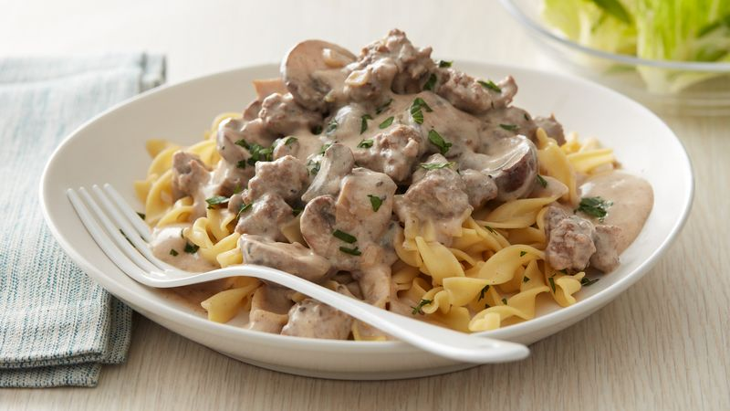

GroundBeefStroganoffNoodles

Description
These ground beef stroganoff noodles are a shortcut version of classic beef stroganoff in a one-pan version. The ultimate comfort food with flavorful ground beef, mushrooms, and egg noodles.
Like most people who grew up during the Golden Age of processed food, my mom bought a fair amount of pre-packaged, pre-mixed, just-add-water type meals, but when it came to pasta or noodles in a ground meat sauce, her hamburger did not need any help.
Ingredients
- 1 tablespoon unsalted butter
- 1 tablespoon vegetable oil
- 1 cup thinly sliced mushrooms
- 1 teaspoon salt, plus more to taste
- for rest of Ingredients
Steps
- Melt butter and oil in a skillet over medium-high heat. Add mushrooms, season with salt, and saute, stirring occasionally, until they turn golden brown, 5 to 10 minutes
- Stir in minced garlic and flour, and cook for 1 minute. Pour in vodka and allow to evaporate, about 30 seconds. Stir in beef broth and water and bring to a simmer. Cook, stirring occasionally, for 10 minutes.
- Reduce heat to medium, and mix in noodles. Cover with a tight-fitting lid and simmer for 5 minutes. Uncover and stir thoroughly. Cover again and cook until noodles are just tender, about 3 minutes.
- Once noodles are cooked, reduce heat to low, and stir in sour cream. Serve immediately with additional sour cream and green onions or chives if so desired.